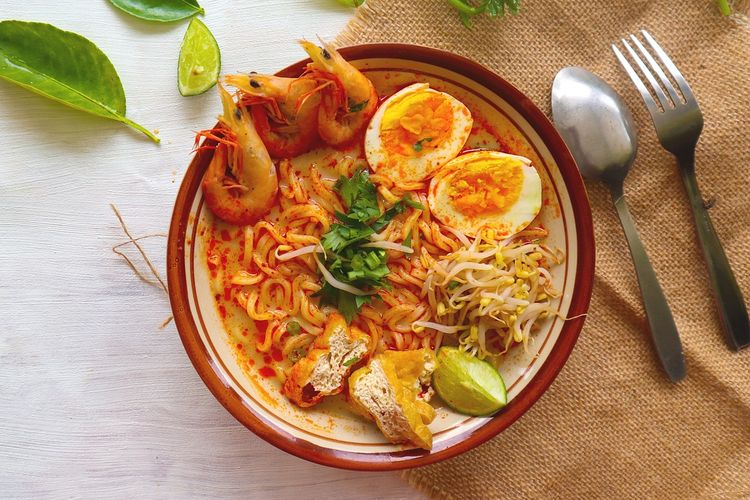

Laksa is a spicy noodle dish popular in Southeast Asia. Laksa consists of various types of noodles, most commonly thick rice noodles, with toppings such as chicken, prawn or fish. Most variations of laksa are prepared with a rich and spicy coconut soup or a broth seasoned with sour asam.
Meal prep time : 1 hour 30 minutes
Servings : 2